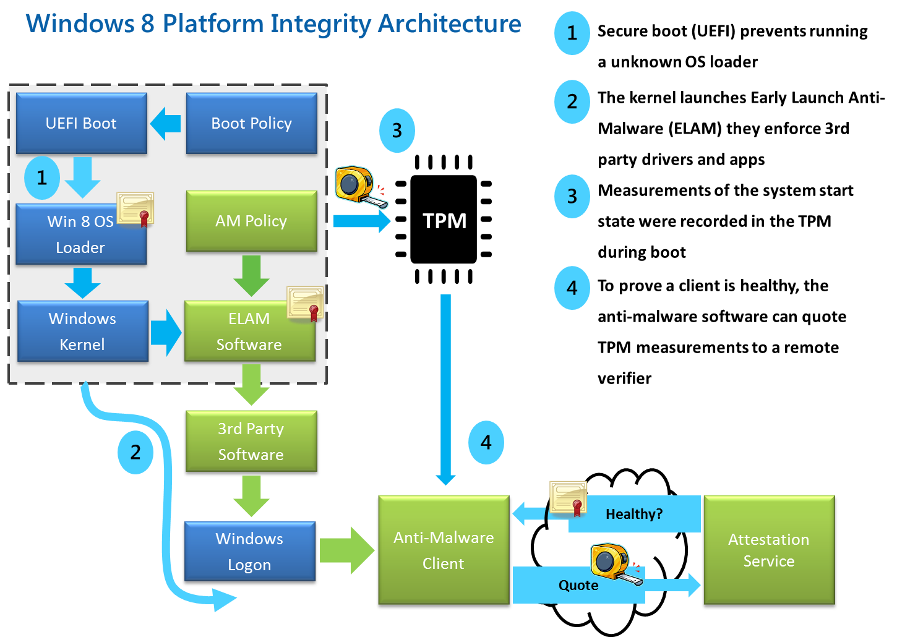
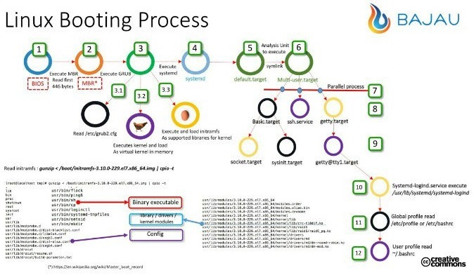

Booting Up Linux
1 Overview
1.1 Penguins Boot House

1.2 The 20,000-foot view of the Linux boot process

Figure 2: The widths of the rectangles: Why are they decreasing? BIOS or UEFI
1.3 Booting Up Timeline, a total of about 15 secs?
- Yes! [Excluding graphical login.] [On machines from 2010+]
- SSDs? Even less.
- https://www.quora.com/How-many-seconds-does-it-take-for-your-Windows-10-to-boot-up
2 System Startup
2.1 BIOS
- ./bootup.html Study it!
2.2 UEFI

Figure 3: Good enough for all OS
2.3 GRUB

Figure 4: Enjoy! [CEG4420 does not focus on GRUB]
- All modern (2015+) Linux distros use Grub2.
- Are there security issues in GRUB?
- http://hmarco.org/bugs/CVE-2015-8370-Grub2-authentication-bypass.html Back to 28: Grub2 Authentication 0-Day, Dec 2015.
- Does it still work? Does the attacker have to be present physically?
- Should we place a password on Grub?
- ./bootup.html
2.4 Before Kernel Begins
- OS-Boot-Loaders (OSBL) do not check (deeply) hardware or the kernel.
- They do check for "magic numbers".
- Open the kernel as a file at the path name given, using borrowed portions of OS code built into OSBL.
- Load the program into real (non-virtual) memory.
- Pass control to the kernel.
2.5 After Kernel Begins
- Device discovery and initialization
- Virtual memory initialization
3 Files and Mounts
- ./filesMounts.html Study it!
4 After Kernel Begins
- Perform a variety of checks …
- Its main goal is to invoke the program named "init". Locations
searched for:
/sbinand/etc. - Extremely poor practice: Path name of init given to the
OS-boot-loader; ex:
init=/bin/bash
5 After Init Begins
- Save the kernel logs, spewed during boot but before init.
- Where? On a separate system.
- When do we mount the rest of volumes?
- Every action of init must be logged.
6 Security Implications of a "Bad" Boot
- Everything is compromised.
- And, you may not even recognize it!
- Unauthorized access – yes.
- Trojans invoked as trusted programs – yes.
- Check the trustworthiness of a file/ program – answers yes, because of rootkits and Trojaned libraries. [Such forward references will be resolved.]
7 Hibernation
- https://wiki.archlinux.org/index.php/Power_management/Suspend_and_hibernate Recommended Reading.
8 What is Kernel Doing after init has Begun?
- Discussion Topic! Start from how we should interpret "doing"?
inithas begun – does it end? - See syllabus. Discussion 5% Bonus. Active participation in the group discussions is expected.
9 References
- https://utcc.utoronto.ca/~cks/space/blog/tech/UEFIBootThings Reference.
- https://www.blackhat.com/presentations/bh-usa-07/Heasman/Presentation/bh-usa-07-heasman.pdf 2007, 41 slides. Highly recommended reading.
- http://www.rodsbooks.com/refind/ The rEFInd Boot Manager. Also, explains UEFI, etc. Highly Recommended Deployment and Reading.
- https://opensource.com/article/18/1/analyzing-linux-boot-process Highly Recommended Reading.
- https://www.linux.com/blog/demystify-gnulinux-boot-process-systemd Recommended Reading.
- https://wiki.archlinux.org/index.php/Improving_performance/Boot_process Highly Recommended Deployment and Reading.